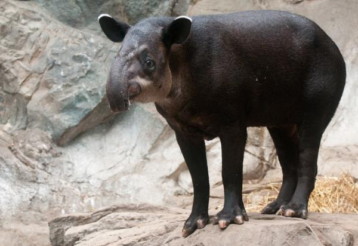

| Macho de monte o Tapir centroamericano | ||
|---|---|---|
|
El macho de monte se caracteriza por tener un pelaje corto, hocico largo hasta el pecho y que las hembras tienen un periódo de gestación de 400 días para dar a luz. Se estima que en Panamá actualmente existen solo 1000 ejemplares y disminuyen de manera constante por la caza indicriminada de la especie y largo periódo de gestación. Su nombre científico es Tapirus bairdii, es llamado tapir, niguanchan, danta, etc. Habitan en países como Panamá, México y Ecuador serca de bosques hú o zonas secas si hay vegetación y ríos en los alrededores. | ||
|  | ||